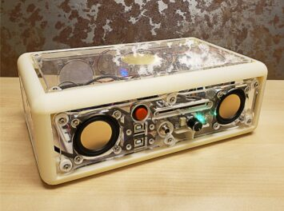
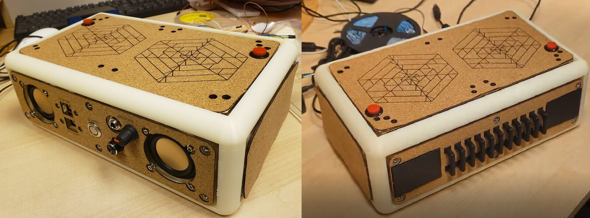
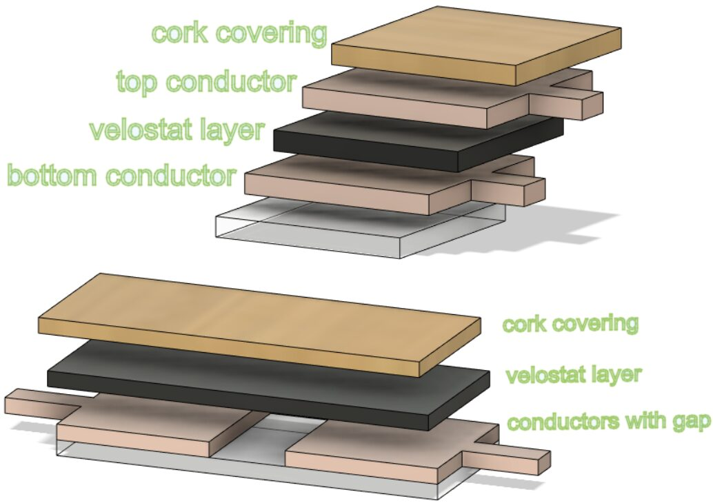
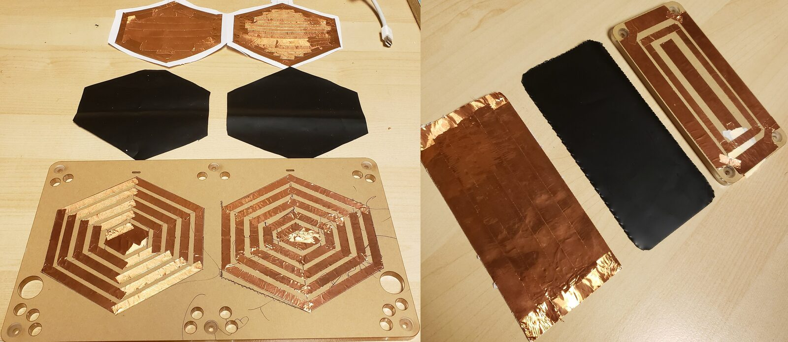
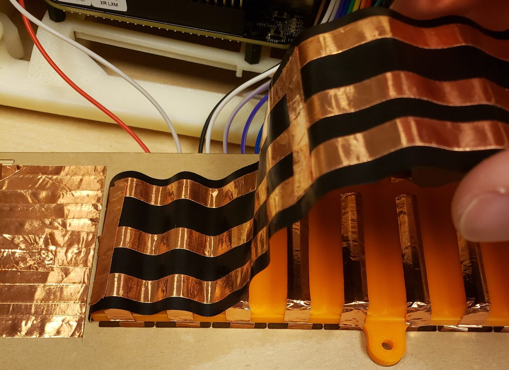
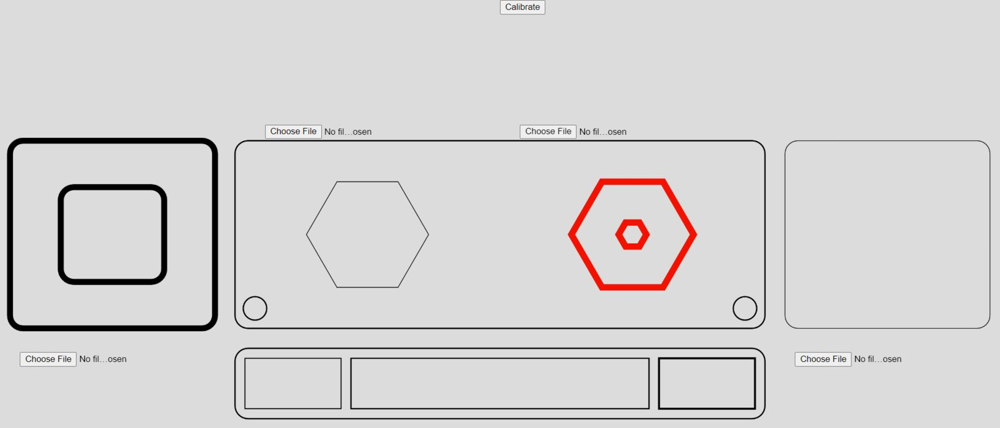
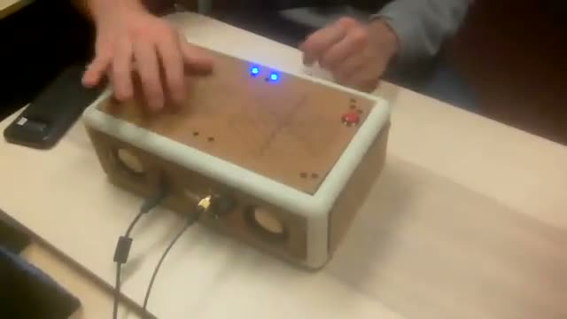
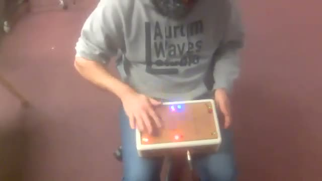
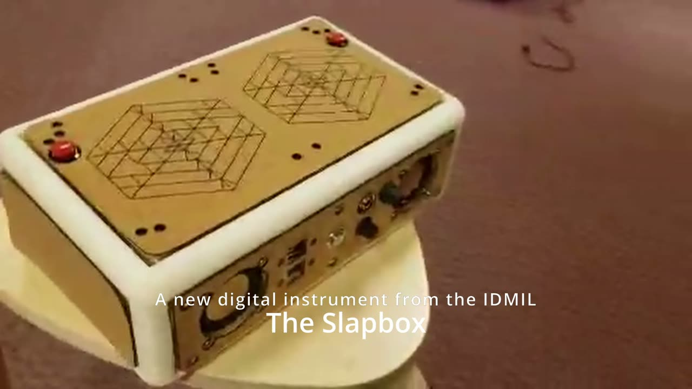

Slapbox: Redesign of a Digital Musical Instrument Towards Reliable Long-Term Practice
Abstract
Digital musical instruments (DMIs) built to be used in performance settings need to go beyond the prototypical stage of design to become robust, reliable, and responsive devices for extensive usage. This paper presents the Tapbox and the Slapbox, two generations of a standalone DMI built for percussion practice. After summarizing the requirements for performance DMIs from previous surveys, we introduce the Tapbox and comment on its strong and weak points. We then focus on the design process of the Slapbox, an improved version that captures a broader range of percussive gestures. Design tasks are reflected upon, including enclosure design, sensor evaluations, gesture extraction algorithms, and sound synthesis methods and mappings. Practical exploration of the Slapbox by two professional percussionists is performed and their insights summarized, providing directions for future work.
Author Keywords
DMI, embedded instruments, percussion, iterative design, sensor design
CCS Concepts
•Applied computing → Sound and music computing; •Human-centered computing → Interaction design; •Computer systems organization → Embedded and cyber-physical systems;
Introduction
Designing a digital musical instrument (DMI) [1] for musical performance involves creating a responsive, robust device that gives the performer confidence in their interactions. While vital for commercially made instruments, these properties are often overlooked in research-borne DMIs. Though this can be attributed to a number of factors including project scope and time constraints, it leaves many instruments unable to be maintained or played reliably after construction [2].
Bearing these goals in mind, this project explores the development of the Slapbox: a low-latency, robust DMI for percussionists that can be engaging and reliable for a performer to use. This project builds up from previous research into designing standalone DMIs for performance that are viable for long-term practice [3].
The choice to iterate on an existing instrument was a key part of the instrument’s development. The process of iteration in design can be modeled as a continuous pattern reflecting the current understanding of the design problem [4]. In addition to the initial formulation, using iteration throughout the design process facilitates the recognition of drawbacks that may be improved upon in future developments [5][6].
For instance, to avoid the development time often spent on enclosure design and electronics choices, the Slapbox utilizes the work completed on an existing instrument towards this goal: the Tapbox [7]. Both instruments provide control surfaces and audio output in the same enclosure, letting users pick up and play them with minimal setup, though they differ in key design features such as the materials used in the interaction surfaces and sensor design to capture percussion gestures.
In order to understand the limitations and opportunities for iteration from the original Tapbox, its design and framework are first reviewed. Interaction and synthesis goals for the Slapbox are then examined, forming a procedure for sensor evaluation and gesture extraction. Several sound synthesis methods and mappings are explored to utilize the new interaction opportunities offered by the design, using informal evaluations performed by two professional percussionists to discuss the instrument’s success in its design goals. In addition to detailing the technical development of a new digital instrument, this paper aims to provide insights gained from the iterative process regarding sensor configurations, signal processing efficiency and design segmentation.
Background
Percussive gestural controllers and instruments afford an impressive variety of interaction types and sounds. Commercial digital percussion controllers most commonly take the form of velocity sensitive MIDI drum pads1,2,3 that utilize finger drumming techniques to trigger musical events in an external program. Devices to augment existing acoustic percussion instruments have been created that utilize known interaction surfaces [8][9][10] including commercial products such as Sensory Percussion Sensors4. The acoustic properties of percussive interactions have been used to classify gestures [11] or enhance the sonic properties of the interactions [12], seen commercially in the Korg Wavedrum5. Other instruments have been created using specific synthesis goals to design the physical interface [13].
A standard paradigm for musical interaction proposed by Claude Cadoz specifies three categories of gestures: excitation, selection and modulation [14]. Excitation gestures directly produce a sound as in striking a drum, while modulation changes a sonic property or parameter of the instrument. Selection gestures are used to select a component from an instrument, such as selecting a drum pad to hit from one of the pad controllers mentioned above. Modulation gestures are significantly less common with percussion instruments, which was considered when planning the redesigned instrument.
The Slapbox and its predecessor, the Tapbox, are designed as standalone digital instruments with embedded sound synthesis to be played using hands/fingers, either placed on a stand or as a portable instrument. The instrument design aims to imitate the finger drumming capabilities provided by velocity pad controllers for gestural input. The Slapbox aims to give users the ability to fuse excitation and modulation gestures in percussive performances by serving both types of gestures on the same control surface.
Revisiting the Tapbox
The Tapbox was one of three instruments developed in parallel, and belongs to a family of instruments called Noiseboxes. The objective of the original Noisebox was to incorporate some of the essential elements of conventional instruments into a standalone device that could afford new and different ways of performing [15]. In particular, qualities of instant playability (pick it up and start playing), tightly coupled input to sound mapping, direct sound output, and wires-free operation were prioritized. Several versions of the original Noisebox were constructed, all maintaining the same basic input controls (primarily buttons, linear FSRs and IMU-based motion sensing) and sound output (FM synthesis-based polyphonic drones).
Physical Design
The interaction style of the Tapbox was inspired by the cajón, a box shaped percussion instrument played with the hands. In particular, two qualities were highly appealing. First, there are no ‘external’ controls, meaning that the walls of the box itself are the input controls. Second, a skilled player can elicit a variety of sounds from the different surfaces of the cajón, based on both the construction (with snares and other treatments applied to the inside of the instrument) and playing techniques.
For the Tapbox (pictured in Figure 1), one surface was reserved for necessary auxiliary controls and connection points, while the remaining five sides functioned as input devices that could be mapped to different sounds. To detect strikes from the player, a large piezoelectric element was attached to the underside of each acrylic side panel, while rubber bushings isolated the panels from the 3D printed frame. Orientation sensing was also added to the Tapbox which could modulate the sound in different ways.


The Tapbox, showing the Top panel with its piezo sensor and the side control panel with speakers.
Sound Synthesis and Modulation
Two synthesis modes were developed for the Tapbox. The first was a conventional drum kit based on the voices of the classic Roland TR-808 and built using a variety of subtractive and FM synthesis techniques. This mode was intended for the instrument to serve in a fairly typical percussive fashion, that could share some similarity to the cajón. The second mode was a versatile physical model based on resonant cylinder that could deliver a variety of sounds, from percussive bell-like tones to complex, multi-timbral drones. The purpose of this mode was to feature novel synthesized sounds that could be controlled using familiar gestures.
A unique feature of the instrument was the method of selecting and interpolating between the two synthesis modes which leveraged the Tapbox’s IMU-based orientation sensing capability. When the instrument was positioned normally (as shown in Figure 1), the drum synthesis mode would be active. Rotated 180° into an upside down orientation, the resonant cylinder synthesis mode would be active, and rotating the box somewhere in the middle (between 75° and 115°) would interpolate between the two modes. Additional modulation parameters for both synthesis modes were mapped to the other rotational axes so that the instrument could produce a wide variety of percussive and non-percussive sounds depending on its position and movement.
Limitations and Possible Improvements
The Tapbox was preliminarily completed, yet it suffered from issues that precluded it from being viable for performance. In particular, two main areas were identified for further development, which ultimately led to the new Slapbox instrument.
First, despite successful initial tests, we were disappointed with the performance of the chosen sensor design. While the piezoelectric panel sensors performed well in testing, there were significant limitations with respect to the desired interaction styles. Amplitude sensitivity was poor, and the design didn’t allow for continuous control signals or positional sensing.
Second, physical interactions were similar in all panels, given the use of the same materials and sensors in all five sides, preventing exploration of other types of physical interactions with the instrument.
To determine the work needed for an improved design, the Tapbox was evaluated in terms of its enclosure and interaction surfaces to search for re-usable components in the device. To retain the standalone functionality of the original design, the front panel’s speakers and auxiliary control inputs were preserved. Much of the Tapbox’s internal electronics including the microcontroller, audio and power circuits are re-used, with both designs operating on the Bela6 platform which enables low-latency audio and sensor acquisition.
Slapbox Development
Interaction Methods
The Slapbox is a percussive instrument that offers several interaction surfaces to be tapped, brushed, and slapped. Interactions give users real-time control over modulation effects using the same drumming surfaces, aiming to further explore the uses of modulation gestures in percussive performances.
Panel Layouts
The box’s top panel contains two large position sensing pads and two buttons that change the playback speed of the audio. To provide visual feedback to the user, LED’s are positioned around the top panel and light up when the corresponding pad is struck or held. Each side panel functions similarly to the position sensing pads on the top panel, detecting strike position relative to the side’s center. A ridged guiro-inspired component lies in the middle of the back panel to enable rhythmic sliding gestures with small pressure pads on either side of it. Velocity, pressure and position are tracked by all components except for the pads on either side of the guiro, which track only velocity and pressure. Each panel is covered with a 1mm layer of cork, which provides a smooth tactile feeling without affecting the accuracy of sensor readings. The completed assembly can be seen from both sides in Figure 2.


The Slapbox design. Left: Top and speaker/auxiliary control side. Right: Top and guiro side. Note the (red) buttons and the LEDs positions in the Top panel.
Sensor Evaluations
Capturing the position, continuous pressure and velocity of percussive gestures requires transducers that can sense extremely quick body movements. Although there exists many sensors that are capable of extracting percussive gestures [16], the design goals and constraints of this project eliminates several options from consideration.
The use of rigid acrylic panels as interaction surfaces instead of flexible membranes rules out reflective optical sensors as candidates, which have been used to accurately detect strike positions [17]. As our design intends to be played with the user’s hands, approaches that typically track stick motion such as cameras, electromagnetic sensors and accelerometers do not apply. Fiberoptic sensors have been used to sense multitouch pressure [18], but their lack of commercial availability and shape variations would impede the instrument’s reproducibility. Microphones and piezoelectric sensors are able to extract and classify percussive excitation gestures as seen in [11] and [7] respectively, but fail to capture the continuous pressure of modulation gestures. Additionally, trials with the panel-mounted piezoelectric sensors on the Tapbox resulted in leakage peaks when striking the frame or adjacent panels, and mounting the sensor between an additional acrylic layer also dampened its signal leading to unreliable velocity estimation.
This leaves us with force sensitive resistors (FSRs), which are able to sense continuous pressure and come in a variety of shapes, sizes and sensitivities. A number of configurations were considered, including standalone FSRs from commercial sources7 and homemade sensors built from resistive materials that can be configured to detect pressure [19].
Though both commercial and homemade FSRs are able to track pressure, the shape restrictions of commercial models do not allow for the position sensing capabilities afforded by homemade sensors. Pressure resistive materials like Velostat8 can be configured to detect continuous position by arranging patterns of conductors above and below the material. Compared to other pressure resistive materials seen in [19], Velostat’s consistency and robustness led to its use for the Slapbox’s sensors. It should be noted that a combination of different sensing types can be used to reinforce the accuracy and consistency of extracted gestures as seen in [20], and these methods may be applied to future iterations of the Slapbox. The comparison of capabilities for commonly used percussive sensors can be seen in Table 1.
Percussive Sensor Comparison
Velocity | Continuous Pressure | Position | |
|---|---|---|---|
Reflective optical | yes | yes | yes |
Video and IR | yes | no | yes |
Electromagnetic | yes | no | yes |
Accelerometer | yes | no | no |
Fiberoptic | yes | yes | yes |
Microphone | yes | no | no |
Piezoelectric | yes | no | no |
Force Sensitive Resistor | yes | yes | no |
Velostat | yes | yes | yes |
Sensor Design
Velostat can be configured to detect taps using either of the circuits shown in Figure 3. Drum pads for the top and side panels are created with the sandwich circuit option by placing rings of copper tape concentrically around each other (shown in Figure 4), configuring each ring as a voltage divider with Velostat as the variable resistor. The concentric configuration was chosen to track tap position relative to the center of the pad, imitating the behavior of a circular drum head. The top pads contain five rings each while the side pads only had room for three, resulting in slightly less resolution in the side panel’s position estimations. Slots are laser cut into the panels to pass the top and bottom conductors through to the inside of the box for connection. The sensing range for the drum pads were increased by adding an additional layer of Velostat to each pad. This modification resulted in more accurate velocity estimations and added room for lighter impulses to be detected.
One important drawback to the concentric ring pads is their ability to detect multiple contact points on the same surface. While this configuration achieves concentric position sensing using only a few sensing inputs to the microcontroller, each ring is only able to detect one interaction at a time. This limits the types of detectable finger drumming techniques, and could be improved in a later iteration by using a different (and more dense) conductor configuration.


Velostat sensors: Sandwich (top) and gap (bottom) configurations.


Details of the drum pad design showing individual layers of the sensor configurations.
Variance in surface area in the conductive strips was found to lead to uneven steady-state values for each ring due to larger conductive areas allowing more charge through the resistive material. This inconsistency requires normalization to detect the centroid accurately by distributing the signal values linearly between their minimum resting values and a common maximum shared by all pads, which is an available function in the graphical user interface presented later on.
Both the guiro and its neighboring small pads were tested using Figure 3’s gap circuit, but experiments showed that this configuration was only accurate when pressing directly in the middle of the gap. Using the sandwich circuit for all components on the back panel (seen in Figure 5) resulted in usable signals, but required too much force to detect natural brushes across the ridges. In a later iteration of the back panel, the guiro was replaced with 3D printed ridges of conductive PLA material9 (seen in Figure 2). 3D printed conductive materials have many uses for creating custom resistive and capacitive sensors [21]. By connecting the conductive ridges to a Trill Craft capacitive touch sensing board10, the ridges are able to detect touch interactions from user. Capacitive sensing for the guiro proved much more reliable than the Velostat configuration, but limits guiro interactions to fingers or another conductive material. As the Slapbox is primarily designed for finger and hand interactions, this is an acceptable limitation.
The back panel’s side pads were also iterated upon, using 3D printed conductive layers of PLA instead of copper tape to make the contact to the Velostat more consistent. Wires could be attached to the PLA for the side pads and guiro components cleanly on the other side of the panel by heating up the tips of male jumper wires with a soldering iron while pressing them into the material.


Original guiro design showing individual layers of the sensor setup.
Gesture Extraction
Position calculation
The values for each ring can be compared to find the most likely position of the source of pressure being applied to a pad, and can also be used for analyzing continuous pressure changes. As pads are comprised of multiple rings each with their own pressure values, the centroid is first determined to estimate where the pressure source lies relative to the pad’s center. A larger number of rings in a pad results in a finer resolution of this calculation, yet only three rings as in the side pads produced accurate estimations. Ring thickness and distance between rings must also be considered, though the centroid calculation assumes equidistant rings with equal widths. For the array of ring values x, the floating point index of the centroid is calculated with:
where:
n = the number of strips, and
m = the sum of values
Pressure estimation
A pad’s centroid index represents the floating point representation of the center of mass of the ring pressure array, indicating the relative position to the pad’s center while pressure is applied. Once the index is calculated, a pad’s pressure value is found by linearly interpolating between the ring array values around the centroid index. The centroid was found to be mostly noise until pressure was applied to the pad, so is only considered valid when the pad’s overall pressure value exceeds roughly 1 of its maximum value.
Impulse detection
Detecting pad strikes, seen as impulses in pressure values, is done by calculating the rate of change of pressure over time. If the pad’s pressure and its rate of change exceed a threshold, an impulse is detected using a state machine. The impulse threshold determines the sensitivity of the instrument, and it is important to find a value that detects light impulses without resulting in false triggers. This pressure value at the time of an impulse being detected corresponds to the impulse’s velocity.
The guiro component is able to use this algorithm by detecting swipes across its ridges as sequential impulses. The swipes generate considerably less force than taps on the pads though, so the threshold to trigger impulses is lowered for its sensor configuration.
Sound Synthesis
Using the Slapbox’s sensor input from each surface, a simple mapping was designed to trigger percussion sounds using audio sampling. Using the gesture extraction algorithms above, the position relative to a pad’s center and velocity value can be extracted from each tap on any of the four full sensing pads and mapped to synthesis parameters.
When tapped, the pads trigger an audio sample of either a kick, snare, hi-hat, or clap. Two similar samples of each pad’s respective sound type are played at the same time, with the tap position relative to the pad’s center determining a crossfade value between the two samples. The smaller back pads don’t detect this parameter, therefore only one sample is played when triggered. The velocity of the tap controls the overall gain of the sample(s), imitating the acoustic property of strike force directly relating to volume. This configuration provides dynamic percussion timbres and imitates the sonic changes when striking an acoustic drum head in different positions.
The guiro component triggers a pitched audio sample when any of its 11 ridges are touched. The playback speed for each ridge’s triggers range from the sample’s original speed to twice as fast, distributing pitches linearly across an octave.
Two mappings for the buttons on the top panel were explored over the course of the instrument’s creation. The first applies a delay effect to the overall audio. When a modulating button is pressed on the top panel, the corresponding side panel near the button acts as a delay effect modulator. The position where pressure is applied to the side panel modulates the delay rate, changing to 200 ms when pressing in the center and defaulting to 400 ms when no pressure is applied. The delay effect is set to 50% feedback and is applied to all output audio as long as the button is held down. The second mapping controls playback speed of the Slapbox’s audio over 3 octaves. The left button slows the playback speed of audio samples to half of the original, and the right button doubles the speed. In place of the delay functionality in the first mapping, this mapping retriggers audio samples at a fixed rate while pressure is applied to a pad after a strike.
Synthesis was implemented in C++, creating a simple granular engine to achieve polyphonic sampling by generating one grain per audio clip. In the case of the full pads with position estimation, this results in two grains, each with scaled gains according to the position crossfade value. Latency between a tap and its audio output was able to be reduced noticeably by reducing the audio block size to 32 samples per block.
Graphical User Interface
Aside from the visual feedback provided by the LEDs, a graphical user interface (GUI) was created to visualize pad strike position and intensity in real-time using Bela’s GUI framework. Though initially implemented as a debugging tool for visualizing gestural signals, it can also be used during a performance to further confirm the registration of interactions with the device. The interface presents a flattened version of the box’s components that reflects their centroids, pressure and impulse status. Seen in Figure 6, the line thickness of each panel’s outline represents pressure intensity, and the centroid is inscribed in each pad when pressure is applied. Automatic sensor normalization can be triggered with this interface to resolve sensor drift that may occur over time.


Slapbox GUI showing a flattened version of the instrument’s interaction surfaces.
Evaluation and Future Work
Informal user evaluations were completed with two professional percussionists throughout the project to gauge the Slapbox’s fulfillment of its design goals and identify opportunities for improvement. Both participants are active performers currently pursuing a doctoral degree in percussion, one of whom had already incorporated digital percussion instruments and effects into their performances in the past. While both percussionists evaluated the instrument before the back panel was iterated upon, only the latter percussionist was able to return and try out the new features.
The two percussionists were told the Slapbox was a digital musical instrument for percussion performance and given unlimited time to play the instrument, typically jamming for about 30 minutes per session. They were asked to freely explore the instrument while providing feedback about its performance and playability from their own musical perspective. The instrument was used both on a table and on the user’s lap to explore different playing techniques.
Instrument Impressions
Both percussionists engaged with the Slapbox after only a few minutes of experimentation, achieving complex interactions in the form of fast tapping passages involving complex rhythms using several surfaces on the device. An example of early experimentation with the Slapbox from one of the users can be seen in Video 1.

▶Demo of a user engaging with the Slapbox.
https://youtu.be/3NMhfeX6CmE
Both performers noted that the LEDs on the tap panel were helpful indicators to confirm strikes on the box, and the GUI was able to help the participants better understand the functions of the drum pads. The cork surface was liked by both participants, but one of them had concerns of its durability due to its thickness. Both participants also regarded the instrument’s response time as immediate, which was one of the main goals of the design.
The delay modulation behavior using the buttons was well received, and one participant was able to create complex rhythms by weaving the delayed audio together from hits, seen in Video 2. One user suggested toggling the button effects instead of requiring them to be held down, as it took away much of the mobility in one hand when holding a button.

▶A user using the Slapbox’s delay modulation effect.
https://youtu.be/Gjej_jxp9b0
The false positive detections that are evident in Video 1 and Video 2 were substantially reduced with the new back panel implementation. The percussionist that evaluated the instrument after the changes noted “I like how it responds. Last time there was a bit more false triggering. In this [version], I feel a lot more in control of the instrument”. They also enjoyed the retriggering behavior and playing the pitched guiro ridges “like a marimba”, to complement the atonal percussion sounds from the other surfaces.
Interestingly, the playing technique of one of the percussionists changed when the retrigger behavior was added to the instrument. Instead of using fast strikes as in Video 1 and Video 2, the performer preferred to hold one or more surfaces to retrigger samples while playing with the octave-modulating buttons to achieve different variations of the sounds. Slightly changing the instrument’s mappings resulted in the user re-interpreting, or co-adapting [22], their playing techniques.

▶Slapbox jam with retriggering and playback speed mappings
https://youtu.be/4A6B_7KCdrU
Future Work
Based on suggestions from the evaluations and design goals, there are many opportunities to continue development on the Slapbox. In particular, exploring sensor fusion with PVDF film or other transducers might enhance the accuracy of impulse detection.
Loading custom samples into the Slapbox was a popular request during the user evaluations, and could be accomplished using the GUI in a future iteration. Related to this, additional research could also explore new mappings between the device’s control space and sound synthesis. For example, percussion physical modeling synthesis could be used to imitate acoustic responses on a drum head using the position value from pads. The Slapbox’s interaction surfaces can also be used for non-percussive or harmonic mappings to explore its use in other musical contexts.
Conclusions
This paper has detailed the design of a new percussion DMI built on a framework of an existing instrument. Iterating on an existing instrument proved useful to address some previously identified areas for improving sensor design and interaction capabilities, while incorporating new features. Percussion gesture extraction methods were examined, giving sensor configuration insights from the instrument’s iterations. While further development is planned, initial evaluations were positive, and show promise for the Slapbox to become a robust, reliable instrument suitable for real-world use.
Acknowledgments
The authors would like to thank Yves Méthot and the Centre for Interdisciplinary Research in Music Media and Technology for technical support and facilities provided on this project. The authors would also like to thank Martin Daigle for their repeated evaluations and feedback throughout the project.
Ethics Statement
This work is partially supported by a Discovery grant from the Natural Sciences and Engineering Council of Canada to the third author. There are no observed conflicts of interest. The informal user evaluations were conducted with two individuals who are well known to the authors and affiliated with the same research lab. Accordingly, formal ethics approval and consent were not obtained. While not explicitly discussed in the paper, issues of sustainability were considered throughout the project, especially in the reuse of existing fabrication materials and the choice to use cork as opposed to similar synthetic materials on the surface of the instrument panels.
Footnotes
- ↩
Strike MultiPad: https://www.strikemultipad.com/
↩Nord Drum 3p: https://www.nordkeyboards.com/products/nord-drum-3p
↩Sensory Percussion: https://sunhou.se/sensorypercussion
↩https://www.korg.com/caen/products/drums/wavedrum_global_edition/
↩- ↩
- ↩
- ↩
- ↩
- ↩
Citations
- ↩Miranda, E. R., & Wanderley, M. M. (2006). New digital musical instruments: control and interaction beyond the keyboard (Vol. 21). AR Editions, Inc.
- ↩Sullivan, J., & Wanderley, M. M. (2018). Stability, Reliability, Compatibility: Reviewing 40 Years of DMI Design. Proceedings of the Sound and Music Computing Conference, 319–326.
- ↩Sullivan, J. (2021). Built for Performance: Designing Digital Musical Instruments for Professional Use [Phdthesis]. Doctoral Thesis. McGill University.
- ↩Adams, R. S., & Atman, C. J. (1999). Cognitive Processes in Iterative Design Behavior. Proceedings of the Frontiers in Education Conference, 1, 11A6-13.
- ↩Roth, T., Huang, A., & Cunningham, T. (2021). On Parallel Performance Practices: Some Observations on Personalizing DMIs as Percussionists. Proceedings of the International Conference on New Interfaces for Musical Expression.
- ↩Tom, A. J., Venkatesan, H. J., Franco, I., & Wanderley, M. (2019). Rebuilding and Reinterpreting a Digital Musical Instrument - The Sponge. Proceedings of the International Conference on New Interfaces for Musical Expression, 37–42.
- ↩Sullivan, J., Vanasse, J., Guastavino, C., & Wanderley, M. M. (2020). Reinventing the Noisebox: Designing Embedded Instruments for Active Musicians. Proceedings of the International Conference on New Interfaces for Musical Expression, 5–10.
- ↩Brown, H., & Topel, S. (2019). DRMMR: An Augmented Percussion Implement. Proceedings of the International Conference on New Interfaces for Musical Expression, 116–121.
- ↩Sheffield, E., & Gurevich, M. (2015). Distributed Mechanical Actuation of Percussion Instruments. Proceedings of the International Conference on New Interfaces for Musical Expression, 11–15.
- ↩Pardue, L. S., Bhamra, K., England, G., Eddershaw, P., & Menzies, D. (2020). Demystifying tabla through the development of an electronic drum. Proceedings of the International Conference on New Interfaces for Musical Expression, 596–599.
- ↩Jathal, K., & Park, T.-H. (2016). The HandSolo: A Hand Drum Controller for Natural Rhythm Entry and Production. Proceedings of the International Conference on New Interfaces for Musical Expression, 218–223.
- ↩Sierra, J. D. (2020). SpeakerDrum. Proceedings of the International Conference on New Interfaces for Musical Expression, 600–604.
- ↩Chuchacz, K., O’Modhrain, S., & Woods, R. (2007). Physical models and musical controllers: Designing a novel electronic percussion instrument. Proceedings of the International Conference on New Interfaces for Musical Expression, 37–40.
- ↩Cadoz, C. (1988). Instrumental Gesture and Musical Composition. Proceedings of the International Computer Music Conference, 1–12.
- ↩Sullivan, J. (2015). Noisebox : Design and Prototype of a New Digital Musical Instrument. Proceedings of the International Computer Music Conference, 266–269.
- ↩Tindale, A. R., Kapur, A., Tzanetakis, G., Driessen, P., & Schloss, A. (2005). A Comparison of Sensor Strategies for Capturing Percussive Gestures. Proceedings of the International Conference on New Interfaces for Musical Expression, 200–203.
- ↩Sokolovskis, J., & McPherson, A. P. (2014). Optical Measurement of Acoustic Drum Strike Locations. Proceedings of the International Conference on New Interfaces for Musical Expression, 70–73.
- ↩Huott, R. (2002). An interface for precise musical control. Proceedings of the International Conference on New Interfaces for Musical Expression, 1–5.
- ↩Jathal, K., & Park, T.-H. (2016). The HandSolo: A Hand Drum Controller for Natural Rhythm Entry and Production. Proceedings of the International Conference on New Interfaces for Musical Expression, 218–223.
- ↩Sullivan, J., Vanasse, J., Guastavino, C., & Wanderley, M. M. (2020). Reinventing the Noisebox: Designing Embedded Instruments for Active Musicians. Proceedings of the International Conference on New Interfaces for Musical Expression, 5–10.
- ↩Koehly, R., Curtil, D., & Wanderley, M. M. (2006). Paper FSRs and Latex/Fabric Traction Sensors: Methods for the Development of Home-Made Touch Sensors. Proceedings of the International Conference on New Interfaces for Musical Expression, 230–233.
- ↩Koehly, R., Curtil, D., & Wanderley, M. M. (2006). Paper FSRs and Latex/Fabric Traction Sensors: Methods for the Development of Home-Made Touch Sensors. Proceedings of the International Conference on New Interfaces for Musical Expression, 230–233.
- ↩Kapur, A., Davidson, P., Cook, P. R., Driessen, P. F., & Schloss, W. A. (2004). Digitizing North Indian Performance. Proceedings of the International Computer Music Conference.
- ↩Lazarus, N., & Bedair, S. S. (2020). Creating 3D printed sensor systems with conductive composites. Smart Materials and Structures, 30(1), 015020.
- ↩Mackay, W. (2000). Responding to cognitive overload: Co-adaptation between users and technology. Intellectica, 30(1), 177–193.